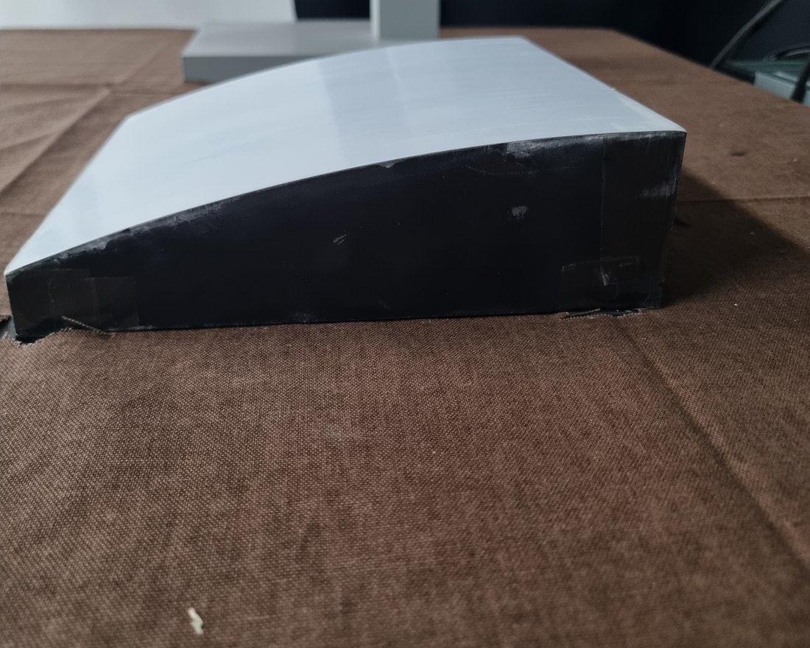
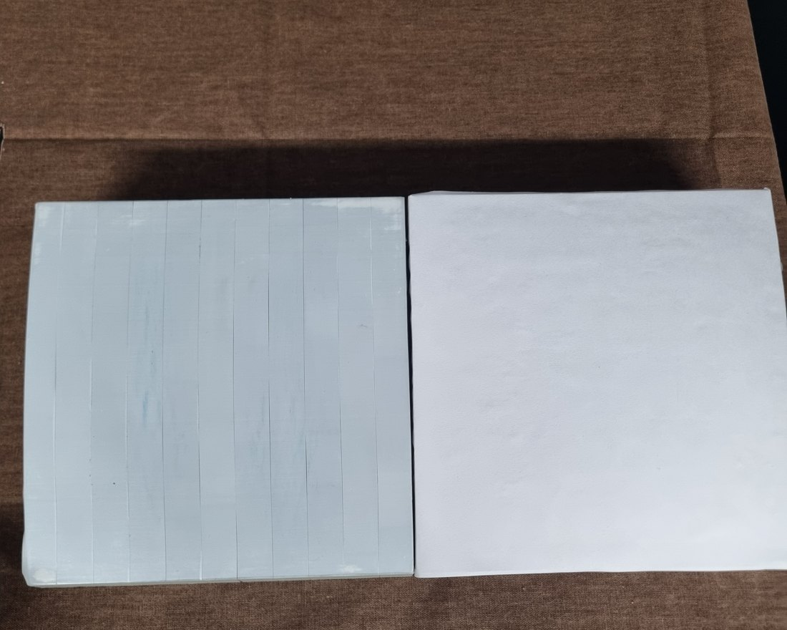
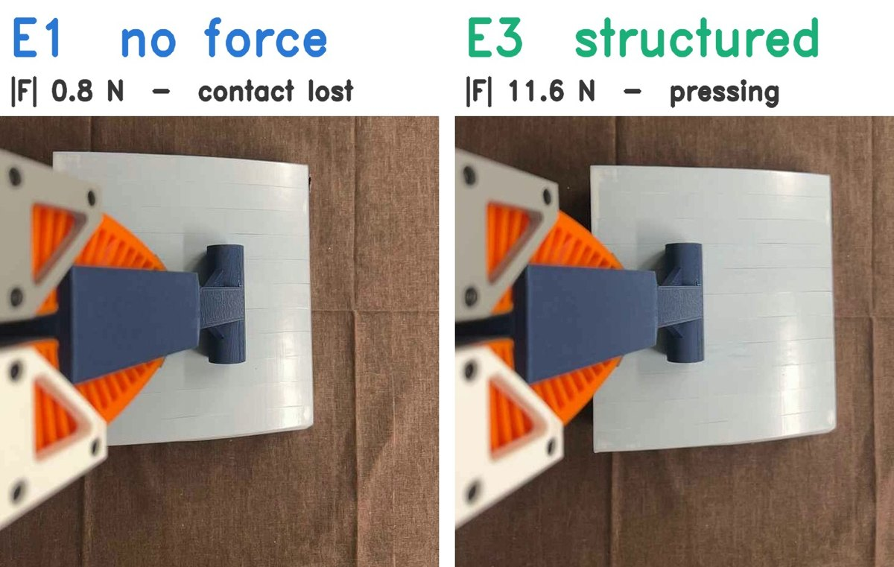

손목 F/T 센서를 통합한
UMI 시연 데이터 기반
Diffusion Policy의
힘 표현 방식 비교 연구
A Controlled Comparison of Force Representations
for Diffusion Policy Learning from UMI Demonstrations
with a Wrist F/T Sensor
1경희대학교 기계공학부 2경희대학교 기계공학부 교수
시연 데이터 수집
요약
Diffusion Policy는 영상과 손목 자세만으로 시연을 모방하지만, 경사면을 눌러 따라가는 접촉 과제의 결과를 지배하는 마찰과 법선력은 영상에 나타나지 않습니다. 표준 UMI 그리퍼에 6축 힘/토크 센서를 통합해 시연을 모으고, 그 힘을 정책 입력으로 어떤 형태로 넣어야 하는지를 데이터·모델·시드를 고정한 통제 비교(힘 없음 / 원시 렌치 / 물리 구조화, 시드 3개)로 측정했습니다. 학습한 표면과 마찰이 33 % 다른 표면에서 함께 평가하고, 두 표면을 섞어 학습한 경우도 비교했습니다.
하드웨어와 실험 환경




파이프라인

로봇 폐루프 검증 — 오프라인 차이가 실제 동작으로 이어졌다
위 영상들은 바깥 카메라로 찍은 회차들입니다. 넓은 장면으로 로봇 전체 움직임을, 측면 장면으로 툴과 판을 가까이 봅니다. 두 정책은 18초마다 번갈아 돌았고 바깥에서는 거의 같아 보입니다. E1이 판 위에 스치는 높이가 몇 mm라 화면에 안 잡히기 때문입니다. 종이 영상은 첫 종이 세션의 시작부터 찍혔고 그 세션은 기록상 E3 → E1 교대로 시작했으므로 두 회차를 그렇게 표기했습니다. 테이프 영상은 세션 중간이라 표기하지 않았습니다. 정책 차이 자체는 아래 손목 카메라 녹화로 봅니다. 이 녹화에는 프레임마다 시각이 있어 회차의 정책이 확정되고, 힘 센서 값이 같이 찍힙니다.
| 표면 | 정책 | 접촉 유지 | 접촉 이탈 |
|---|---|---|---|
| 테이프 (학습) | E1 | 45.5 ± 12.3 % | 7.0 ± 4.2회 |
| E3 | 74.8 ± 3.9 % | 1.9 ± 1.5회 | |
| 종이 (미학습) | E1 | 65.5 ± 5.6 % | 1.7 ± 2.3회 |
| E3 | 78.1 ± 3.5 % | 0.7 ± 1.1회 |
각 10회, 200스텝(약 7 s), E3·E1 교대. 학습 표면에서 E3의 접촉 유지 우세는 +29 %p(p<10⁻⁴), 미학습 종이에서는 +13 %p로 절반 이하로 줄고 이탈 차이는 사라집니다 — 오프라인의 "구조화의 이득은 학습 조건에 갇힌다"가 폐루프에서 재현된 것입니다. 같은 받침에 표면만 바꿔 경사를 동일하게 두었고(μ 0.30 → 0.20), 법선력을 맞춘 부분집합과 회귀에서도 E3 우세가 남았습니다. 시드 1개·E2 없음·접근 구간 생략은 한계입니다.

핵심 결과 한 장